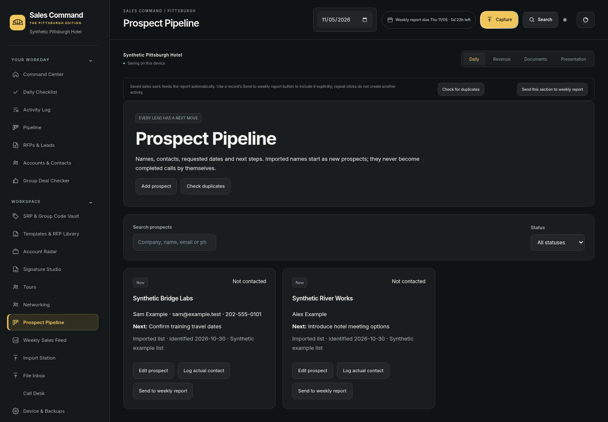
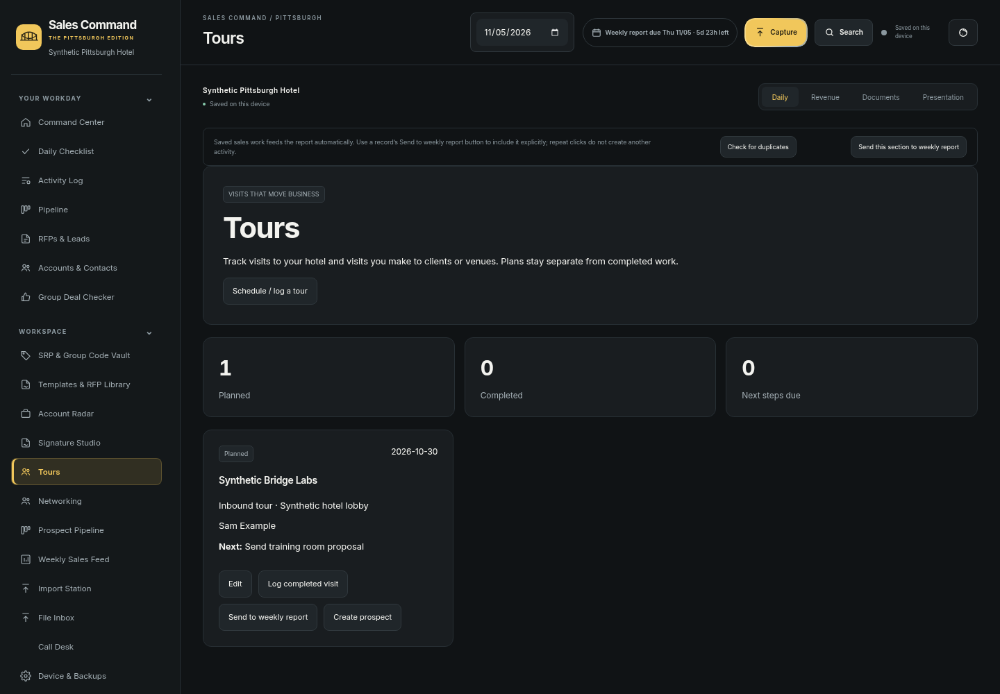
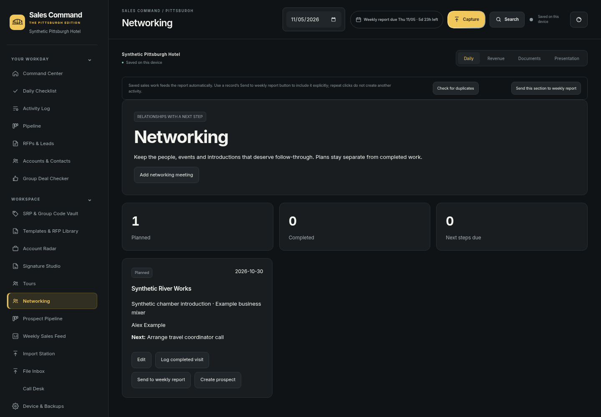
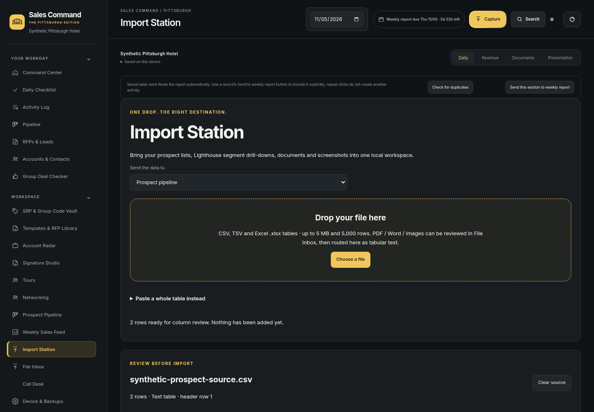
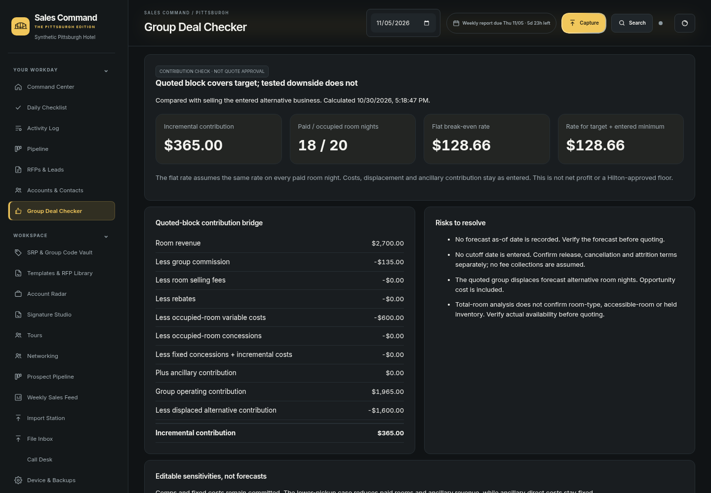
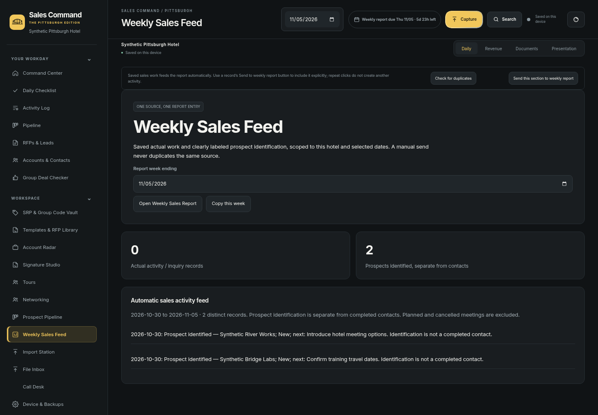
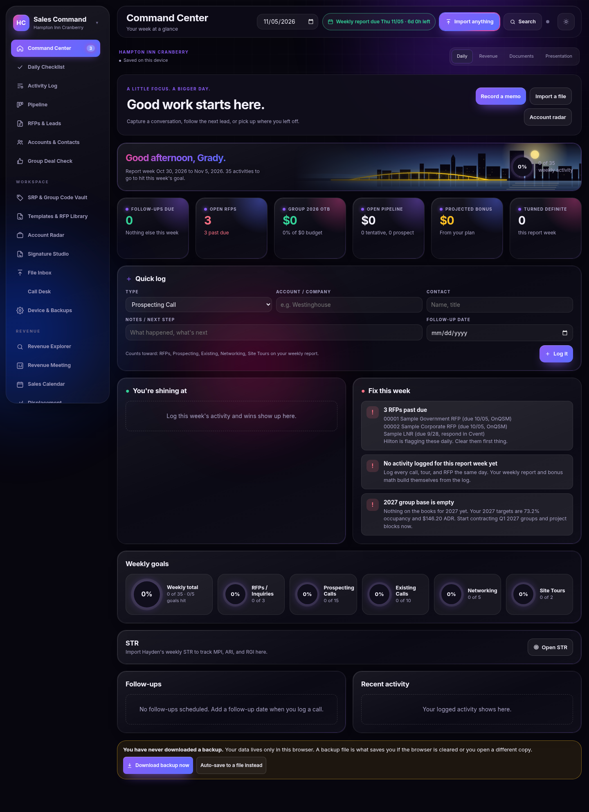

Actual browser screenshots · synthetic demo workspaceSales Command.
The Pittsburgh edition.
Four color themes, a city scene with optional motion, and connected local sales workflows. These are actual screenshots of the app. Still images do not demonstrate animation.
How to use and install · Marcus and worker review · Executed validation
Steel City
Pittsburgh black and gold
Three Rivers
Navy and teal, with an original ballpark and football stadium on the riverfront.
Foundry
Warm charcoal and copper
Sunday Morning
Light paper and gold
The city in motion
Actual eight-second browser recording: flowing river, reflections, office lights, bridge traffic and airplane. Watch MP4 · Open animated GIF.
Connected sales workspaces
Prospect Pipeline

Inbound and outbound tours

Networking

Import Station

Group Deal Checker

Weekly Sales Feed

Before this update

The prior dashboard, for comparison.Review a representative Lighthouse export and your final Safari report/contract PDF before using them for work. No private reference agreement is included in these screenshots.